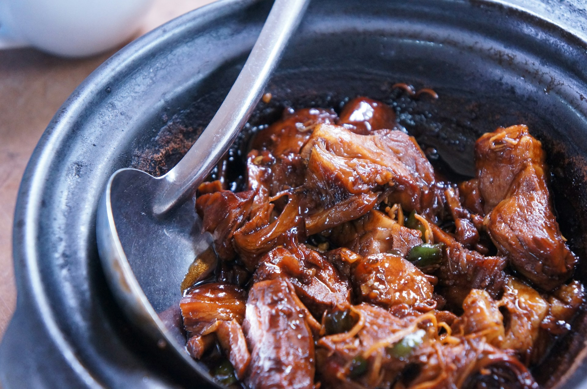

Pulled Pork

Description
We are using beer to break down the protien and add flavor.
The best part, leave it in the slowcooker over night and voila!
Ingredients
- 1 (5 pound) pork butt roast
- 2 teaspoons salt
- 1 teaspoon ground black pepper
- 1 teaspoon garlic powder
- 1 (12 fluid ounce) can beer (such as Shiner® Bock)
- 1 (12 ounce) bottle barbecue sauce (such as Sweet Baby Ray's®)
Directions
- Place pork into the slow cooker. Season with salt,
pepper, onion powder, and garlic powder. Pour beer
into the bottom of the slow cooker. Cover and cook
on High for 1 hour. Reduce the heat to Low and cook
until meat is tender and can be easily pulled apart
with a fork, 8 to 10 hours.
- Remove pork from the slow cooker and shred with
two forks. Discard cooking juices. Return shredded
pork to the slow cooker and stir in barbecue sauce.
Cover and cook on Medium for 1 hour.
Home